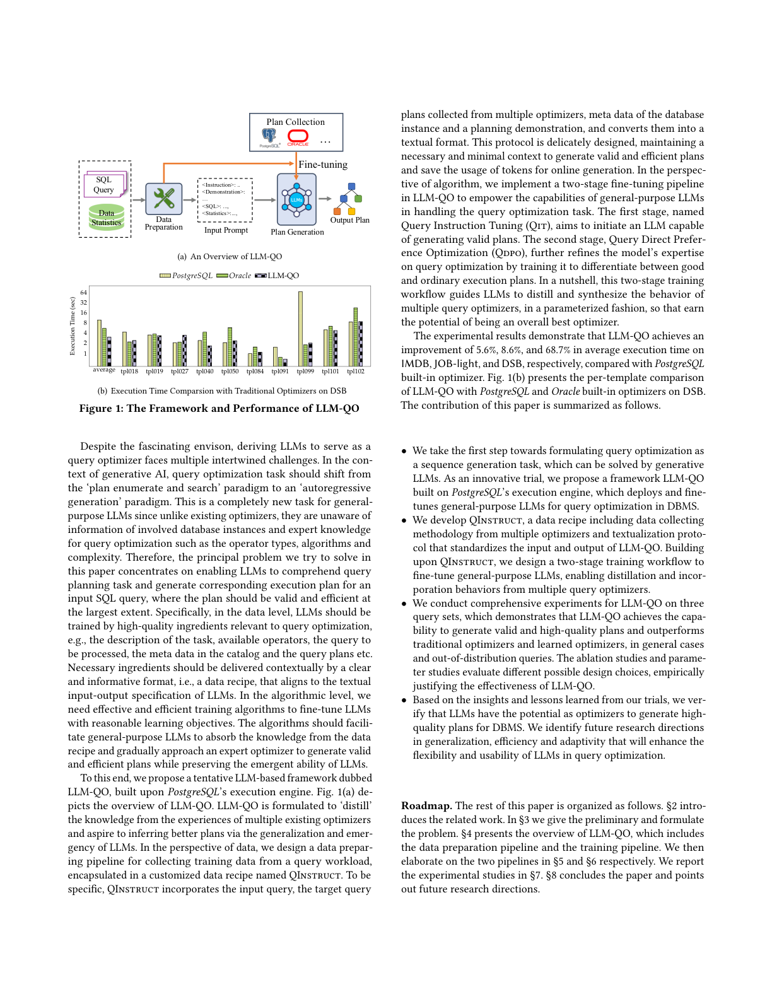
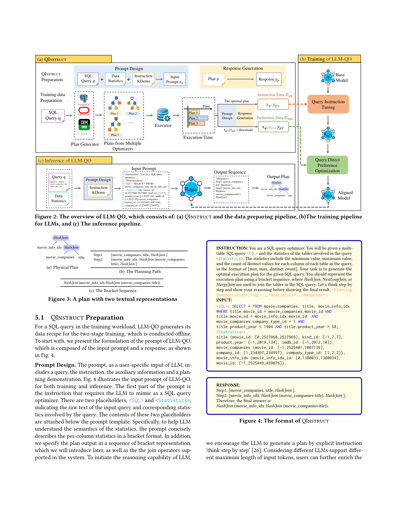
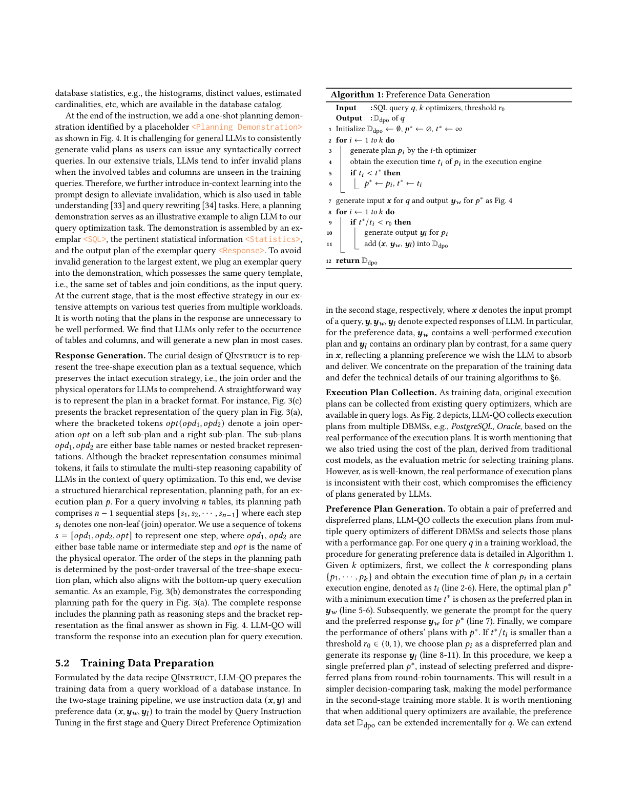
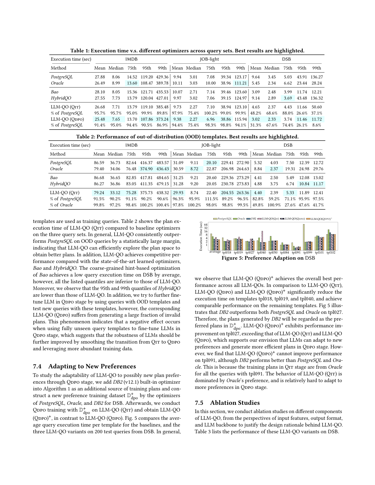
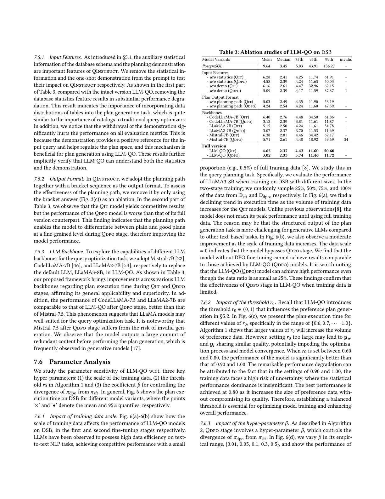
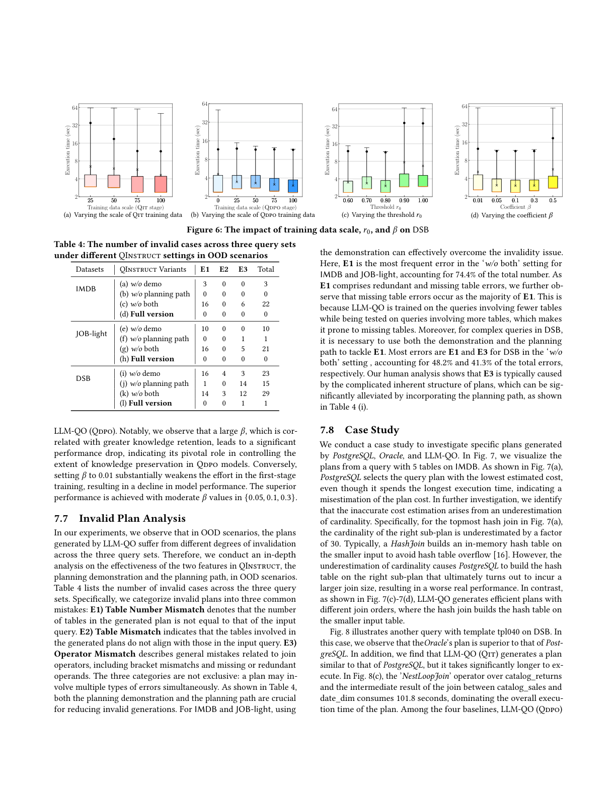
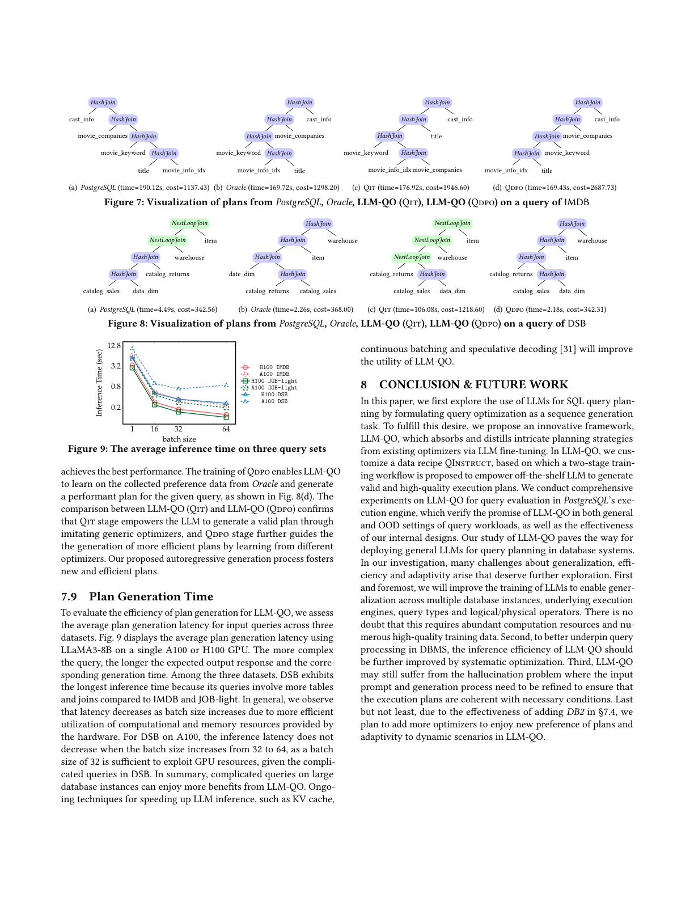

LLM-QO：将查询优化建模为自回归序列生成，并用两阶段微调蒸馏多优化器经验
查询优化旨在为给定查询寻找最优执行计划，是数据库管理系统（DBMS）中一个在指数级增长计划空间内的复杂规划与决策问题。传统优化器严重依赖由大量启发式与经验调参构建的代价模型，往往生成次优计划。近期大语言模型（LLM）在算术、编程等复杂规划与决策任务上展现出潜力。本文探索 LLM 处理查询优化的潜力，提出一个建立在 PostgreSQL 执行引擎之上的、尝试性的基于 LLM 的查询优化器 LLM-QO。
在 LLM-QO 中，我们将查询优化建模为自回归（autoregressive）生成范式，直接生成执行计划而无需显式计划枚举。为研究 LLM-QO 的关键输入，我们设计了一个定制的数据配方 QInstruct，从多种优化器收集训练数据，并将数据库的元数据、查询及对应计划序列化为文本格式。基于 QInstruct，我们实现了两阶段微调流水线——查询指令微调（Qit）与查询直接偏好优化（Qdpo）——赋予通用 LLM 处理查询优化的能力。实验表明，LLM-QO 能生成合法且高质量的计划，在三个查询负载上一致地超越传统与学习型优化器。我们的发现验证了：LLM 可以被「提炼」为查询优化器，而泛化性、效率与适应性值得进一步研究。
查询优化器是 DBMS 的基础组件，历经数十年研究。通用优化器遵循「计划枚举与搜索」范式：从指数级增长的计划空间枚举候选计划，并用代价模型寻找最小代价计划。代价模型依赖大量启发式、假设与超参数，需在特定系统与硬件配置下多年经验校准。近年研究用强化学习等机器学习技术替换动态规划以生成计划，或向通用优化器注入学习策略以引导候选计划选择。这种范式在「计划空间探索」与「执行效率」间取得良好折中，但其性能上界可能受初始枚举阶段生成的候选计划所限，因探索不足而错失更优计划。
近期 LLM 在规划与决策问题上取得巨大成功，展现出解决数学、编程等复杂问题的涌现能力；经任务特定数据微调后，还能接受上下文信息并进行严谨逻辑推理。数据库领域也开始探索用 LLM 做 knob tuning、查询重写等。受此启发，作者提出一个全新视角：能否不经过显式计划枚举，而直接由 LLM 生成执行计划？ LLM 通过大规模预训练获得的推理能力，或可促进对计划空间的全面探索，生成新颖高效的计划。

将 LLM 用作查询优化器面临多重交织的挑战：查询优化任务需从「计划枚举搜索」范式转向「自回归生成」范式，这对通用 LLM 是全新任务——它们不了解具体数据库实例信息与优化器专家知识（算子类型、算法、复杂度）。因此核心问题是：让 LLM 理解查询规划任务并为输入 SQL 生成合法且高效的执行计划。这需要在数据层提供高质量「配料」（任务描述、可用算子、查询、目录元数据、计划等），并以清晰、信息丰富的文本格式（即数据配方）上下文地交付；在算法层需要高效微调算法，使通用 LLM 吸收配方知识、逐步逼近专家优化器，同时保留 LLM 的涌现能力。
为此，我们提出基于 PostgreSQL 执行引擎的 LLM-QO。它将多个现有优化器的经验「蒸馏」为自身能力，借助 LLM 的泛化与涌现推断更优计划。数据上，我们设计数据准备流水线 QInstruct，将输入查询、多优化器收集的目标计划、数据库实例元数据与规划演示转换为文本格式，在保持生成合法高效计划所需的最小上下文的同时节省在线生成的 token。算法上，我们实现两阶段微调：第一阶段 Qit 让 LLM 能生成合法计划；第二阶段 Qdpo 进一步通过区分「好计划」与「普通计划」精炼其专业能力。
实验显示，相比 PostgreSQL 内置优化器，LLM-QO 在 IMDB、JOB-light、DSB 上的平均执行时间分别改善 5.6%、8.6%、68.7%。本文贡献：(1) 首次将查询优化形式化为序列生成任务，并提出基于 PostgreSQL 的 LLM-QO 框架；(2) 提出 QInstruct 数据配方与两阶段训练工作流，实现多优化器知识的蒸馏与融合；(3) 在三个查询集上全面验证 LLM-QO 生成合法高质量计划、超越传统与学习型优化器（含分布外查询）；(4) 据实验教训确认 LLM 有潜力作为优化器，并指出泛化、效率、适应性三大未来方向。
基于学习的查询优化：可分为两类。从零学习（de novo）用强化学习（如 DQ、RTOS、JOGGER 用 MLP/TreeLSTM/图表示建模连接中间状态）替换动态规划；Neo 与 Balsa 提供端到端方案（Neo 用树卷积估计延迟 + 最优优先搜索；Balsa 复用 Neo 架构但从逻辑代价模型 bootstrap）。引导式学习（steered）向通用优化器注入学习策略以引导候选计划选择：Bao 用多臂老虎机搜索每查询 hint（树卷积作价值函数）；HybridQO 将 hint 解释为带部分连接顺序的前缀树；Lero 用不同因子缩放子查询基数并结合 learning-to-rank。
LLM 提示（Prompting）：提示工程、上下文学习（in-context learning）、思维链（CoT）等技术相辅相成，结构化提示 + CoT + 上下文样例可提升跨任务表现。LLM 微调：指令微调使模型遵循自然语言任务描述；RLHF 用成对偏好数据训练奖励模型；DPO 将奖励建模直接融入偏好学习，免去两个独立模型。LoRA 以低秩近似仅更新少量参数，大幅降低微调开销。LLM 用于 DBMS：knob tuning（λ-Tune、GPTuner）、表格理解（Table-GPT）、text-to-SQL、查询规划与重写（GPT-DB、CAESURA、LLM-R2、Evaporate）等。但在「用 LLM 做查询优化」这一方向上仍存在空白——本文即填补此空白。
给定含多张表的数据库，对传统优化器，SQL 查询 $q$ 被转换为树形执行计划 $p$（指定连接顺序与每算子的算法，如图 3(a)）；其基础范式是「枚举候选计划 + 基于代价模型的动态规划搜索最优」。本文目标是构建基于通用 LLM 的模型，直接将查询计划推断出来：将查询 $q$ 及规划所需的数据库模式、统计信息序列化为文本空间 $\mathcal{X}$ 中的 token 序列 $\mathbf{x}$，由 LLM $\pi: \mathcal{X}\to\mathcal{Y}$ 直接以文本响应 $\mathbf{y}\in\mathcal{Y}$ 推断执行计划。生成的响应应满足：(1)可访问——序列输出 token 能容易地转换为执行引擎可评估的物理计划；(2)合法——与查询语义一致；(3)高效——性能接近或超越现有精心设计的优化器。
模型 $\pi$ 通过对现成 LLM（如 LLaMA）在查询负载上微调得到。当前阶段支持选择-投影-连接（SPJ）查询，连接算子为 NestLoopJoin、MergeJoin、HashJoin，表扫描为 SeqScan；面向特定执行引擎上的静态数据库实例。跨库、复杂查询类型、动态负载与动态数据的泛化留作未来工作。
LLM 基于 Transformer，通过自注意力层扩展参数至十亿乃至万亿级。分为闭源（GPT-4、Claude，仅远程 API）与开源（LLaMA、Falcon，便于研究定制）。本文微调开源 LLM 构建优化器。LLM 以自回归的「下一 token 预测」推理，给定输入 $\mathbf{x}=[x_1,\dots,x_n]$ 与输出 $\mathbf{y}=[y_1,\dots,y_T]$，模型参数化条件分布： $$p_\theta(\mathbf{y}|\mathbf{x}) = p_\theta(y_1,y_2,\dots,y_T|\mathbf{x}) = \prod_{t=1}^{T} p_\theta(y_t|\mathbf{x}, y_{1:t-1}) \tag{1}$$ 通过最大似然估计微调（最小化负对数似然）： $$\mathcal{L}(\theta) = \mathbb{E}_{(\mathbf{x},\mathbf{y})\sim\mathcal{D}}[-\log p_\theta(\mathbf{y}|\mathbf{x})] \tag{2}$$ 为释放开源 LLM 在特定任务上的推理潜力，研究者以特定格式定制训练数据，称为数据配方（data recipe）——异构类型、多来源数据的混合，其质量、数量与多样性显著影响 LLM 性能。
LLM-QO 框架如图 2 所示，包含两条主流水线：数据准备流水线与LLM 训练流水线。
数据准备（QInstruct）：目标是在保持信息丰富且简洁的前提下，为 LLM 提供充足指令与知识、同时节省 token。QInstruct 包含五个要素：①Query 待优化 SQL；②优化指令 如何优化及输入说明；③辅助信息 数据库模式与相关统计；④高质量计划 序列化后的高效执行计划；⑤规划演示 一个具体规划示例以缓解幻觉。其中查询、指令、辅助信息、演示组成 prompt，文本化执行计划是微调用的目标响应。计划可从传统（尤其商业 DBMS）优化器收集。
训练流水线：因问题内在困难，采用两阶段逐步增强推理能力。第一阶段 Qit（指令微调）使 LLM 能为给定查询生成「可访问且合法」的计划；第二阶段 Qdpo 通过区分好/普通计划，进一步提升其推断「高效」计划的能力。两阶段共同引导 LLM 以参数化方式蒸馏并融合多个优化器的行为，从而获得成为「全局最优优化器」的潜力。
推理阶段（图 2(c)）：测试查询与辅助信息按 QInstruct 格式拼入输入 prompt，调用微调后的 LLM 得到响应，再将文本响应转换为执行计划用于评估。

QInstruct 由输入 prompt（含查询、指令、辅助信息、规划演示）与文本化响应（执行计划）组成。图 4 展示了其格式：指令要求 LLM 扮演 SQL 优化器，用占位符 <SQL> 与 <Statistics> 注入查询与每列统计（格式为 [min, max, distinct count]），并规定计划以括号序列表示、支持指定连接算子；末尾用「think step by step」显式激发推理。规划演示（<Planning Demonstration>）选用与输入查询同模板（相同表与连接条件）的样例，以最大程度避免无效生成。

响应生成的关键设计：将树形执行计划表示为文本序列，需保留完整执行策略（连接顺序与物理算子）供 LLM 理解。直接用括号表示（图 3(c)）虽省 token，但难以激发 LLM 的多步推理。因此设计结构化层次表示「规划路径（planning path）」：对含 $n$ 张表的查询，规划路径由 $n-1$ 个顺序步骤 $[s_1,\dots,s_{n-1}]$ 组成，每步 $s_i$ 用 token 序列 $[opd_1, opd_2, opt]$ 表示（子计划 + 物理算子），步骤顺序由计划树的后序遍历确定（与自底向上执行语义一致）。完整响应 = 规划路径（推理步骤）+ 括号序列（最终答案）。
两阶段分别使用指令数据 $(\mathbf{x},\mathbf{y})$ 与偏好数据 $(\mathbf{x},\mathbf{y}_w,\mathbf{y}_l)$。其中 $\mathbf{y}_w$ 为表现优异的计划，$\mathbf{y}_l$ 为相对普通的计划，反映我们希望 LLM 吸收的规划偏好。
执行计划收集：从 PostgreSQL、Oracle 等多 DBMS 的查询日志中收集真实执行计划（以真实执行时间而非传统代价模型的代价为评价标准，因二者常不一致）。偏好计划生成：收集 $k$ 个优化器的计划，按执行时间选出最优计划 $p^*$ 作为 $\mathbf{y}_w$；若其他计划 $p_i$ 满足 $t^*/t_i < r_0$（$r_0\in(0,1)$ 为阈值），则选为 $\mathbf{y}_l$。算法 1 详述该过程（保持单一最优计划以降低二阶段训练的决策难度与提升稳定性）。新增优化器时可增量扩展偏好数据集。
微调策略由两阶段组成，均以 LoRA 高效微调实现。
第一阶段 Qit 以 prompt $\mathbf{x}$ 为输入，引导 LLM 推断含规划路径与括号答案的计划 $\mathbf{y}$。它在预训练 LLM $\pi$ 上做有监督微调（SFT），最小化负对数似然： $$\mathcal{L}_{sft}(\theta) = \mathbb{E}_{(\mathbf{x},\mathbf{y})\sim\mathcal{D}_{sft}}[-\log \pi(\mathbf{y}|\mathbf{x})] \tag{4}$$ Qit 本质是监督式模仿学习（如 AlphaGo 先从专家棋谱监督学习），此处「专家经验」来自精心设计的优化器——QInstruct 把 $k$ 个优化器中的最佳计划封装进 $\mathbf{y}$，因此第一阶段 LLM-QO 不仅逐步学会解决查询优化，还「蒸馏」了多个专家中的全局最优优化器。
第二阶段 Qdpo 在 Qit 得到的 $\pi_{sft}$ 上，进一步最大化我们偏好的高效计划似然、最小化普通计划似然。对训练样本 $(\mathbf{x},\mathbf{y}_w,\mathbf{y}_l)$，最小化偏好损失： $$\mathcal{L}_{dpo}(\mathbf{x},\mathbf{y}_w,\mathbf{y}_l;\theta) = -\log\sigma\big(u(\mathbf{x},\mathbf{y}_w,\mathbf{y}_l)\big) \tag{5}$$ 其中 $u$ 为奖励差，参数化由 LLM 学习；$\sigma$ 为 sigmoid，将奖励差归一为「$\mathbf{y}_w$ 优于 $\mathbf{y}_l$」的条件概率 $p(\mathbf{y}_w\succ\mathbf{y}_l|\mathbf{x})$。奖励差由 Qdpo 模型 $\pi_{dpo}$ 以 Qit 模型 $\pi_{sft}$ 为参考近似： $$u(\mathbf{x},\mathbf{y}_w,\mathbf{y}_l) = \beta\log\frac{\pi_{dpo}(\mathbf{y}_w|\mathbf{x})}{\pi_{sft}(\mathbf{y}_w|\mathbf{x})} - \beta\log\frac{\pi_{dpo}(\mathbf{y}_l|\mathbf{x})}{\pi_{sft}(\mathbf{y}_l|\mathbf{x})} \tag{6}$$ 以 $\pi_{sft}$ 归一化可防止仅优化该条件概率时模型退化；$\beta>0$ 控制 $\pi_{dpo}$ 与 $\pi_{sft}$ 的偏离程度（越大越容忍偏离）。算法 2 给出随机梯度下降训练过程。
实验从八个维度全面评估：①三数据集对比基线；②未见模板的泛化；③Qdpo 对新偏好的适应；④QInstruct 提示设计与 LLM 主干的消融；⑤参数敏感性；⑥无效计划分析；⑦可视化计划案例；⑧计划生成时间。
数据集：IMDB（6 张表）与 TPC-DS（24 张表，scale factor 5）。查询：IMDB 上按连接数 $t$ 生成大量 PK/FK 连接查询（每 $t$ 生成 1000 条），并构造 JOB-light（70 个手写模板，每模板 100 条）；DSB（基于 TPC-DS 的 15 个 SPJ 模板，每模板 100 条）。基线：传统优化器 PostgreSQL 12.4、Oracle 23.0，学习型优化器 Bao、HybridQO。指标：所有计划转为 PostgreSQL 物理计划格式，用 pg_hint_plan 执行，以执行时间为评价指标。实现：基于 PyTorch + Unsloth（LoRA），默认主干 LLaMA-3-8B；Qit/Qdpo 学习率分别为 $2\times10^{-4}$/$5\times10^{-6}$，步数 600/200，batch 8；默认 $r_0=0.95,\beta=0.1$，训练/测试 8:2 划分；训练推理用 A100 80GB，查询评估在 96 CPU/512GB 的 PostgreSQL 12.4（冷启动）。
表 1 报告三负载上各优化器的执行时间均值、中位及 75/95/99 分位。LLM-QO 生成计划全部合法，且在绝大多数指标上超越传统与学习型优化器。LLM-QO (Qit) 相对 PostgreSQL 已有显著提升；LLM-QO (Qdpo) 进一步将平均执行时间降至 PostgreSQL 的 91.4%（IMDB）、94.4%（JOB-light）、31.3%（DSB）。95/99 分位相对 PostgreSQL 大幅降低，说明 Qdpo 有效优化长尾场景。相比 Bao/HybridQO（依赖粗粒度 hint、计划探索空间有限），LLM-QO 在 IMDB/JOB-light 长尾上更优；Bao 在 DSB 上因约 76% 计划禁用 NestLoopJoin 而表现突出，说明特定 hint 在特定负载极有效——论文指出可融合学习型优化器计划以进一步增强 LLM-QO。

测试查询采用与训练完全不同的模板（IMDB/JOB-light 用 5 表查询训练 2–4 表；DSB 用 5/6/12 连接模板作测试）。表 2 显示 LLM-QO 在 OOD 上一致大幅超越 PostgreSQL，表明其能高效探索计划空间获得更优解，并与 Bao/HybridQO 竞争。但发现：若用 OOD 模板在 Qdpo 阶段进一步微调，会产生大量无效计划——说明「用完全未见模板微调 Qdpo」有负面效应，需通过平滑 Qit→Qdpo 过渡、丰富训练数据来提升鲁棒性。
在算法 1 中新增 DB2 (v12.1) 优化器，构建新的偏好数据集 D⁺_dpo，得到 LLM-QO (Qdpo)⁺。图 5 对比 200 条 DSB 测试查询各模板的平均执行时间：Qdpo⁺ 总体最佳，在 tpl018/019/040 上显著降低执行时间；在 tpl027 上因 DB2 优于 PG/Oracle 而被采纳为偏好计划，Qdpo⁺ 性能超过 Qit 与 Qdpo，验证了「LLM 能在 Qdpo 阶段适应新偏好」。但在 tpl091 上 Qdpo⁺ 未能改善——因 Qit 阶段该模板计划全来自 Oracle，行为被 Oracle 偏好主导，较难在 Qdpo 阶段适应更多偏好。

输入特征：移除数据库统计信息导致严重性能退化（类似于目录对传统优化器的重要性）；移除演示损害所有指标（演示为输入查询提供正参考、规范计划空间）。输出格式：仅用括号答案（去规划路径）时，Qit 仍有竞争力，但 Qdpo 性能变差——规划路径使模型在 Qdpo 阶段能细粒度区分普通与好计划。LLM 主干：框架在 Mistral-7B/CodeLLaMA-7B/LLaMA2-7B 上均带来改善，验证通用性；CodeLLaMA/LLaMA2 经 Qdpo 后媲美 LLaMA3-8B，Mistral-7B 在 Qdpo 后有无效生成风险（输出大量冗余内容）。
考察三超参（图 6）：训练数据规模——Qit 阶段执行时间随数据量单调下降（与其他文本任务不同，计划生成的结构化输出对 LLM 更难，需全量数据才达峰值）；Qdpo 阶段即便仅 25% 数据也高性能，印证 Qdpo 在数据有限时有效。阈值 $r_0$——$r_0$ 过大使 $\mathbf{y}_w/\mathbf{y}_l$ 质量相近、阻碍收敛；0.60–0.80 显著优于 0.90/1.00，最佳在 0.80（在不损质量前提下增大偏好数据量）。系数 $\beta$——过大（保留知识多）导致显著下降；过小（0.01）弱化第一阶段训练；适中值 {0.05,0.1,0.3} 最优。

表 4 将无效计划分为三类：E1 表数不符、E2 表不符、E3 算子不符（括号/操作数错误）。演示与规划路径对降低无效生成都至关重要：IMDB/JOB-light 用演示即可有效克服（E1 占「两者皆无」设置的 74.4%，多为缺表——因训练用少表、测试用多表）；DSB 复杂查询需演示+规划路径共同应对 E1/E3。人工分析表明 E3 多由计划复杂结构引起，引入规划路径可显著缓解。
图 7 可视化 IMDB 上 5 表查询的计划：PostgreSQL 选了估计代价最低却执行最慢的计划（因基数低估 30 倍，HashJoin 在较大右子树建哈希表导致溢出）；Oracle 计划不同；LLM-QO (Qit/Qdpo) 生成不同连接顺序、在较小输入表上建哈希表的高效计划。图 8 的 DSB tpl040 查询：Oracle 优于 PostgreSQL；LLM-QO (Qit) 计划类似 PostgreSQL 但执行更慢（NestLoopJoin 占主导 101.8s）；LLM-QO (Qdpo) 从 Oracle 收集的偏好数据中学到高性能计划、取得最佳。对比确认：Qit 让 LLM 通过模仿生成合法计划，Qdpo 进一步从多优化器学习生成更高效计划，自回归生成过程催生新颖高效计划。

图 9 显示在单张 A100/H100 上用 LLaMA3-8B 的平均计划生成时延：DSB 因表/连接更多而时延最长；batch 增大时因资源利用更高效而时延下降（DSB 在 A100 上 batch 32→64 不再下降，因 32 已充分利用 GPU）。复杂查询在大型数据库实例上更能从 LLM-QO 获益；KV cache、连续批处理、投机解码等技术将进一步提升其实用性。
本文首次将查询优化形式化为序列生成任务，提出 LLM-QO 框架，通过 LLM 微调从现有优化器吸收并蒸馏复杂规划策略。定制数据配方 QInstruct 与两阶段训练工作流，使现成 LLM 能生成合法高质量执行计划。在 PostgreSQL 执行引擎上的全面实验验证了 LLM-QO 在通用与 OOD 场景的潜力及内部设计的有效性，为在 DBMS 中部署通用 LLM 做查询规划铺平道路。
未来方向：①提升训练使 LLM 跨多数据库实例、执行引擎、查询类型与算子泛化（需大量算力与高质量数据）；②通过系统优化进一步提升推理效率；③缓解幻觉问题（精炼 prompt 与生成过程以保证计划与必要条件一致）；④鉴于 §7.4 加入 DB2 的成效，计划引入更多优化器以享受新计划偏好与对动态场景的适应性。